Spatial Pathway Visualization
spatial_pathway_updated.RmdOverview
This vignette demonstrates the application of PathwayEmbed in mouse embryo spatial data (E9.5 - E12.5). With curated pathway database, we examined and compared Wnt, Notch, TGFb, Hippo, and HIF-1a signaling transduction states across spatial and temporal development. Reference for the initial data: Chen et al. Spatiotemporal transcriptomic atlas of mouse organogenesis using DNA nanoball-patterned arrays, Cell, Volume 185, Issue 10, 2022, Pages 1777-1792.e21.
knitr::opts_chunk$set(
echo = TRUE,
collapse = TRUE,
warning = FALSE,
message = FALSE,
comment = "#>",
fig.width = 8,
fig.height = 6
)
# load library
library(PathwayEmbed)
library(Seurat)## Warning: package 'Seurat' was built under R version 4.4.3## Loading required package: SeuratObject## Warning: package 'SeuratObject' was built under R version 4.4.3## Loading required package: sp## Warning: package 'sp' was built under R version 4.4.3##
## Attaching package: 'SeuratObject'## The following objects are masked from 'package:base':
##
## intersect, t## Warning: package 'ggplot2' was built under R version 4.4.3## Loading required package: viridisLite## Warning: package 'viridisLite' was built under R version 4.4.3## Warning: package 'dplyr' was built under R version 4.4.3##
## Attaching package: 'dplyr'## The following objects are masked from 'package:stats':
##
## filter, lag## The following objects are masked from 'package:base':
##
## intersect, setdiff, setequal, union## Warning: package 'Hmisc' was built under R version 4.4.3##
## Attaching package: 'Hmisc'## The following objects are masked from 'package:dplyr':
##
## src, summarize## The following object is masked from 'package:Seurat':
##
## Key## The following object is masked from 'package:SeuratObject':
##
## Key## The following objects are masked from 'package:base':
##
## format.pval, units## corrplot 0.95 loaded## Warning: package 'tibble' was built under R version 4.4.3## Warning: package 'tidyr' was built under R version 4.4.3Spatial data load and process
The files can be downloaded from figshare via below link:
Huang, Yaqing (2025). dat3.with.niches.norm.Robj. figshare. Dataset. https://doi.org/10.6084/m9.figshare.29649995.v1
Huang, Yaqing (2025). dat4.with.niches.norm.Robj. figshare. Dataset. https://doi.org/10.6084/m9.figshare.29649989.v1
Huang, Yaqing (2025). dat1.with.niches.norm.Robj. figshare. Dataset. https://doi.org/10.6084/m9.figshare.29649992.v1
Huang, Yaqing (2025). dat2.with.niches.norm.Robj. figshare. Dataset. https://doi.org/10.6084/m9.figshare.29649986.v1
# load data
load("dat1.with.niches.norm.Robj")
load("dat2.with.niches.norm.Robj")
load("dat3.with.niches.norm.Robj")
load("dat4.with.niches.norm.Robj")
# Merge together
merged_spatial <- merge(
dat1, y = c(dat2, dat3, dat4))
# Set Default Assay to be "RNA"
DefaultAssay(merged_spatial) <- "RNA"
# Get genes x cell matrix
merged_spatial_matrix <- as.matrix(GetAssayData(merged_spatial, assay = "RNA", layer = "data"))
# Get metadata matrix
merged_spatial_metadata <- merged_spatial@meta.dataGet Pathway Data for Each Pathway first
# All Pathways
ListPathway("Pathway")
#> [1] "HIF1A" "HIPPO" "NOTCH" "TGFB" "WNT"
ListPathway("HIF1A") # Pick Hypoxia_24hr
#> # A tibble: 3 × 8
#> Pathway Sheet.Name GEO.Accession Condition Cell.Source Species No..Genes Notes
#> <chr> <chr> <chr> <chr> <chr> <chr> <dbl> <chr>
#> 1 HIF1A Hypoxia_6… GSE227502 Hypoxia … Primary hu… Human 21 NA
#> 2 HIF1A Hypoxia_2… GSE227502 Hypoxia … Primary hu… Human 18 NA
#> 3 HIF1A Hypoxia_5… GSE227502 Hypoxia … Primary hu… Human 10 NA
ListPathway("HIPPO") # Only one: HIPPO_heat
#> # A tibble: 1 × 8
#> Pathway Sheet.Name GEO.Accession Condition Cell.Source Species No..Genes Notes
#> <chr> <chr> <chr> <chr> <chr> <chr> <dbl> <chr>
#> 1 HIPPO HIPPO_heat GSE133251 Heat str… B16-OVA me… Mouse 40 NA
ListPathway("NOTCH") # Use NOTCH_JAG1_24H -> validated in another datasets
#> # A tibble: 6 × 8
#> Pathway Sheet.Name GEO.Accession Condition Cell.Source Species No..Genes Notes
#> <chr> <chr> <chr> <chr> <chr> <chr> <dbl> <chr>
#> 1 NOTCH NOTCH_JAG1 GSE223734 rJAG1 li… Mouse embr… Mouse 5 NA
#> 2 NOTCH NOTCH_CB1… GSE221577 CB-103 N… RPMI-8402 … Human 46 NA
#> 3 NOTCH NOTCH_LY_… GSE221577 LY411575… RPMI-8402 … Human 46 NA
#> 4 NOTCH NOTCH_JAG… GSE235637 JAG1 sti… SVG-A cells Human 11 NA
#> 5 NOTCH NOTCH_JAG… GSE235637 JAG1 sti… SVG-A cells Human 11 NA
#> 6 NOTCH NOTCH_JAG… GSE235637 JAG1 sti… SVG-A cells Human 11 NA
ListPathway("TGFB") # Use TGFB_Mouse since this is the only Ms dataset
#> # A tibble: 3 × 8
#> Pathway Sheet.Name GEO.Accession Condition Cell.Source Species No..Genes Notes
#> <chr> <chr> <chr> <chr> <chr> <chr> <dbl> <chr>
#> 1 TGFB TGFB_Huma… GSE110021 TGF-β1 t… WI-38 fibr… Human 35 NA
#> 2 TGFB TGFB_Huma… GSE110021 TGF-β1 t… WI-38 fibr… Human 39 NA
#> 3 TGFB TGFB_Mouse GSE246932 TGF-β1 t… T Cells Mouse 9 NA
ListPathway("WNT") # Use WNT3A_SLOPE_ACTIVATION
#> # A tibble: 4 × 8
#> Pathway Sheet.Name GEO.Accession Condition Cell.Source Species No..Genes Notes
#> <chr> <chr> <chr> <chr> <chr> <chr> <dbl> <chr>
#> 1 WNT WNT3A_12H… GSE103175 WNT3A tr… Human Embr… Human 90 NA
#> 2 WNT WNT3A_24H… GSE103175 WNT3A tr… Human Embr… Human 88 NA
#> 3 WNT WNT3A_48H… GSE103175 WNT3A tr… Human Embr… Human 90 NA
#> 4 WNT WNT3A_SLO… GSE103175 WNT3A tr… Human Embr… Human 90 NA
# Load Each Pathwaydatabase
HIf1a_pathwaydata <- LoadPathway("Hypoxia_24hr", "mouse")
Hippo_pathwaydata <- LoadPathway("HIPPO_heat", "mouse")
Notch_pathwaydata <- LoadPathway("NOTCH_JAG1_24H", "mouse")
TGFb_pathwaydata <- LoadPathway("TGFB_Mouse", "mouse")
Wnt_pathwaydata <- LoadPathway("WNT3A_SLOPE_ACTIVATION", "mouse")Calculation
Using Matrix extracted to avoid large size data object, compute score for Wnt, Notch, Hippo, Tgfb, and HIF-1a pathways for the merged subject using ‘ComputeCellData’ in PathwayEmbed
# DataPreProcess
matrix_HIf1a <- DataPreProcess(merged_spatial_matrix, HIf1a_pathwaydata, Seurat.object = FALSE)
matrix_Hippo <- DataPreProcess(merged_spatial_matrix, Hippo_pathwaydata, Seurat.object = FALSE)
matrix_Notch <- DataPreProcess(merged_spatial_matrix, Notch_pathwaydata, Seurat.object = FALSE)
matrix_TGFb <- DataPreProcess(merged_spatial_matrix, TGFb_pathwaydata, Seurat.object = FALSE)
matrix_Wnt <- DataPreProcess(merged_spatial_matrix, Wnt_pathwaydata, Seurat.object = FALSE)
# PathwayMaxMin
pathwaystat_HIf1a <- PathwayMaxMin(matrix_HIf1a, HIf1a_pathwaydata)
pathwaystat_Hippo <- PathwayMaxMin(matrix_Hippo, Hippo_pathwaydata)
pathwaystat_Notch <- PathwayMaxMin(matrix_Notch, Notch_pathwaydata)
pathwaystat_TGFb <- PathwayMaxMin(matrix_TGFb, TGFb_pathwaydata)
pathwaystat_Wnt <- PathwayMaxMin(matrix_Wnt, Wnt_pathwaydata)
# Computing Score
HIf1a_score <- ComputeCellData(matrix_HIf1a, pathwaystat_HIf1a)
Hippo_score <- ComputeCellData(matrix_Hippo, pathwaystat_Hippo)
Notch_score <- ComputeCellData(matrix_Notch, pathwaystat_Notch)
TGFb_score <- ComputeCellData(matrix_TGFb, pathwaystat_TGFb)
Wnt_score <- ComputeCellData(matrix_Wnt, pathwaystat_Wnt)Prepare plot data
Map Timepoints back to the data
# Compute the score for each pathway
Wnt_to.plot <- PreparePlotData(merged_spatial_metadata, Wnt_score, "timepoint", Seurat.object = FALSE)
Notch_to.plot <- PreparePlotData(merged_spatial_metadata, Notch_score, "timepoint", Seurat.object = FALSE)
Hippo_to.plot <- PreparePlotData(merged_spatial_metadata, Hippo_score, "timepoint", Seurat.object = FALSE)
Tgfb_to.plot <- PreparePlotData(merged_spatial_metadata, TGFb_score, "timepoint", Seurat.object = FALSE)
HIF1a_to.plot <- PreparePlotData(merged_spatial_metadata, HIf1a_score,"timepoint", Seurat.object = FALSE)
# Combine to list
pathway_timepoint <- list(
Wnt = Wnt_to.plot,
Notch = Notch_to.plot,
Hippo = Hippo_to.plot,
Tgfb = Tgfb_to.plot,
HIF1a = HIF1a_to.plot
)Preparation for groups
#> /private/var/folders/dy/dxff9z6j5cdd5sqsvz2l5ngc0000gn/T/RtmpAOrgi8/temp_libpath3ff17d773dd5/PathwayEmbed/extdata/pathway_list_timepoint.rds
#> /private/var/folders/dy/dxff9z6j5cdd5sqsvz2l5ngc0000gn/T/RtmpAOrgi8/temp_libpath3ff17d773dd5 /Library/Frameworks/R.framework/Versions/4.4-arm64/Resources/library
# Color set-up
magma_colors <- c("#000004FF", "#721F81FF", "#F1605DFF", "#5A90E6")
# Desired timepoint order
ordered_timepoints <- c("E9.5", "E10.5", "E11.5", "E12.5")
# Reorder timepoint levels
for (name in names(pathway_timepoint)) {
pathway_timepoint[[name]]$timepoint <- factor(pathway_timepoint[[name]]$timepoint, levels = ordered_timepoints)
}Plot across different timepoints
# Calculation
stats <- list()
# Loop through each pathway and generate/save the plot
for (i in seq_along(pathway_timepoint)) {
stats[[i]] <- CalculatePercentage(pathway_timepoint[[i]], "timepoint")
df_stats <- stats[[i]]
df_stats <- stats[[i]] %>%
dplyr::distinct(group, .keep_all = TRUE) %>%
dplyr::rename(timepoint = group)
p <- PlotPathway(
pathway_timepoint[[i]],
names(pathway_timepoint)[i],
"timepoint",
magma_colors
) +
facet_wrap(~factor(timepoint, levels = ordered_timepoints), ncol = 1) +
geom_text(
data = df_stats %>%
mutate(timepoint = factor(timepoint, levels = ordered_timepoints)),
aes(
x = Inf,
y = Inf,
label = sprintf(
"ON: %.1f%%\nOFF: %.1f%%\np = %.2g",
percentage_on, percentage_off, kruskal_p
)
),
hjust = 1.1,
vjust = 1.1,
size = 3,
inherit.aes = FALSE
)
print(p)
# ggsave(
# filename = paste0(names(pathway_timepoint)[i], "_timepoint_plot.png"),
# plot = p,
# width = 6,
# height = 8,
# dpi = 300
# )
}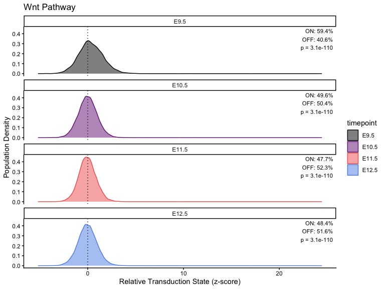
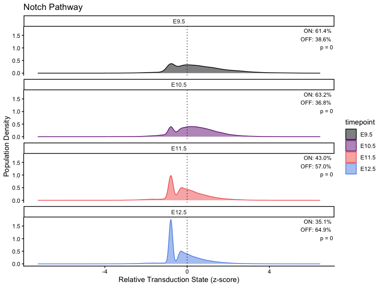
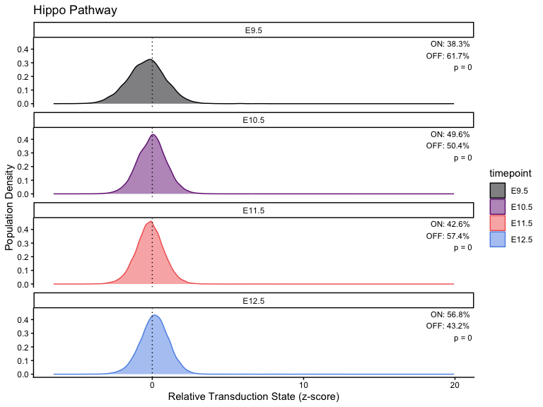
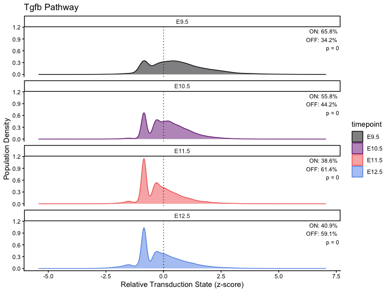
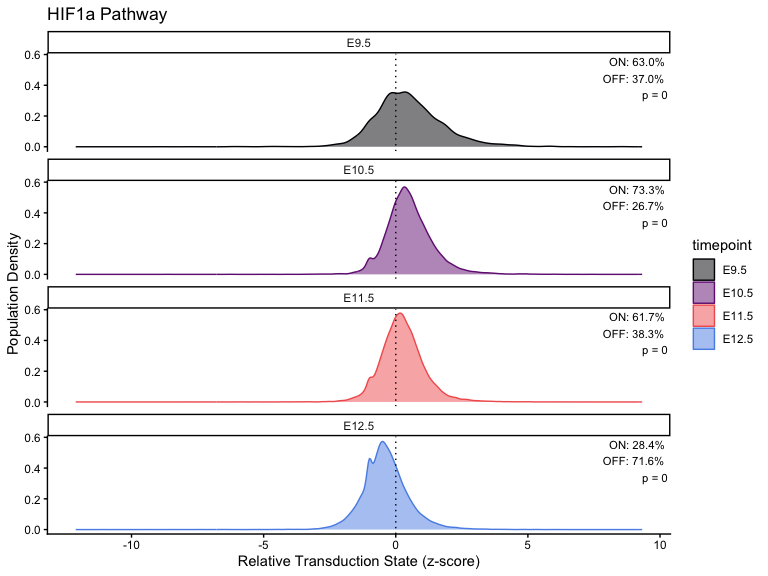
Merge score with original metadata
# Step 1: Create named score vectors for each pathway
score_list <- lapply(pathway_list, function(df) {
s <- df$scale
names(s) <- rownames(df)
return(s)
})
# Step 2: Add each pathway score to dat1–dat4
for (i in 1:4) {
dat <- get(paste0("dat", i)) # get dat1, dat2, ...
for (pathway_name in names(score_list)) {
score_vec <- score_list[[pathway_name]]
dat[[paste0(pathway_name, "_score")]] <- score_vec[colnames(dat)]
}
assign(paste0("dat", i), dat) # assign back to dat1, dat2, etc.
}
# List of Seurat objects
dat_list <- list(dat1, dat2, dat3, dat4)
names(dat_list) <- paste0("dat", 1:4)
# List of pathways
pathways <- names(pathway_list) # e.g., "Wnt", "Notch", etc.Extract the coordinates
# Function to extract
extract_pathway_df <- function(seu, pathway, sample_name = "sample") {
coords <- as.data.frame(Embeddings(seu[["spatial"]]))
colnames(coords) <- c("x", "y")
coords$score <- seu[[paste0(pathway, "_score")]][rownames(coords), 1]
coords$sample <- sample_name
return(coords)
}
# Set list to save the coordinates
combined_df_lists <- list()
# For loop for all pathways
for (pathway in pathways) {
pathway_df_list <- mapply(
FUN = extract_pathway_df,
seu = dat_list,
sample_name = names(dat_list),
MoreArgs = list(pathway = pathway),
SIMPLIFY = FALSE
)
combined_df <- do.call(rbind, pathway_df_list)
combined_df_lists[[pathway]] <- combined_df
}Plot the spatial data
# Compute global symmetric limits (recommended)
all_values <- unlist(lapply(combined_df_lists, function(df) df$scale))
q <- quantile(all_values, c(0.02, 0.98), na.rm = TRUE)
max_abs <- max(abs(q))
global_limits <- c(-max_abs, max_abs)
for (pathway in names(combined_df_lists)) {
combined_df <- combined_df_lists[[pathway]]
# randomize the plot
combined_df <- combined_df[sample(nrow(combined_df)), ]
p <- ggplot(combined_df, aes(x = x, y = y, color = scale)) +
geom_point(size = 0.01) +
scale_color_viridis_c(
option = "magma",
limits = global_limits, # symmetric across all pathways
oob = scales::squish,
name = paste0(pathway, "_score")
) +
scale_y_reverse() +
coord_fixed() +
theme_void() +
theme(
legend.position = "right",
plot.title = element_text(hjust = 0.5, face = "bold")
) +
ggtitle(pathway)
print(p)
}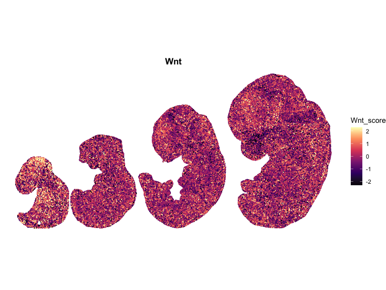
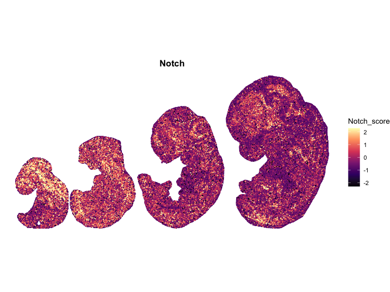
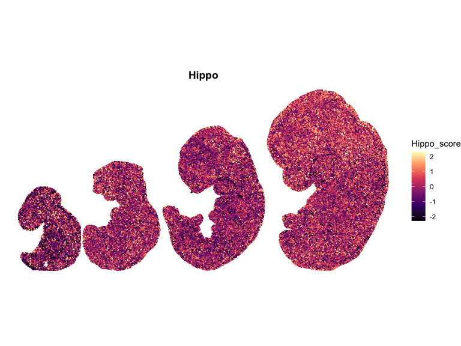
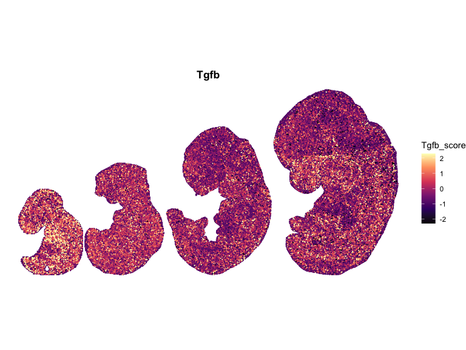
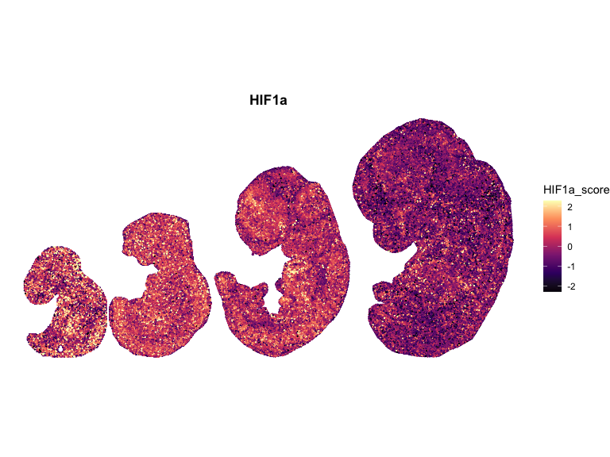
## Spatial Correlation Analysis using Moran’s I
library(spdep)
# Global Moran's I
compute_morans_I <- function(df, k = 6) {
coords <- as.matrix(df[, c("x", "y")])
# k-nearest neighbors graph
knn <- knearneigh(coords, k = k)
nb <- knn2nb(knn)
lw <- nb2listw(nb, style = "W")
# Moran’s I test
moran.test(df$scale, lw)
}
moran_results <- lapply(names(combined_df_lists), function(pw) {
df <- combined_df_lists[[pw]]
res <- compute_morans_I(df)
data.frame(
pathway = pw,
morans_I = res$estimate[["Moran I statistic"]],
p_value = res$p.value
)
})
moran_results <- do.call(rbind, moran_results)
print(moran_results)
#> pathway morans_I p_value
#> 1 Wnt 0.08640729 0
#> 2 Notch 0.21093640 0
#> 3 Hippo 0.09334557 0
#> 4 Tgfb 0.12592755 0
#> 5 HIF1a 0.25478622 0
# compute neighbor Moran's I for pathways with high spatial autocorrelation
compute_local_moran <- function(df, lw, pathway_name) {
local <- localmoran(df$scale, lw)
transform(
df,
local_I = local[, 1],
z_score = local[, 4],
p_value = local[, 5],
pathway = pathway_name
)
}
# Apply to selected pathways
selected_pathways <- c("Notch", "HIF1a")
df_plot <- do.call(rbind, lapply(selected_pathways, function(pw) {
compute_local_moran(combined_df_lists_updated[[pw]], lw, pw)
}))
library(ggplot2)
library(viridis)
# 🔀 Randomize plotting order
df_plot <- df_plot[sample(nrow(df_plot)), ]
df_plot$cluster <- "Not significant"
df_plot$cluster[df_plot$p_value < 0.05 & df_plot$local_I > 0] <- "High-High"
df_plot$cluster[df_plot$p_value < 0.05 & df_plot$local_I < 0] <- "Low-Low"
df_plot$cluster <- factor(df_plot$cluster,
levels = c("High-High", "Low-Low", "Not significant"))
df_plot <- df_plot[sample(nrow(df_plot)), ]
p_cluster <- ggplot(df_plot, aes(x = x, y = y, color = cluster)) +
geom_point(size = 0.001) +
scale_color_manual(values = c(
"High-High" = "#d73027", # red = hotspot
"Low-Low" = "#4575b4", # blue = coldspot
"Not significant" = "grey80"
)) +
scale_y_reverse() +
coord_fixed() +
facet_wrap(~ pathway) +
theme_void() +
labs(title = "Local Moran’s I Clusters",
color = "Cluster")
print(p_cluster)
Benchmark towards Progeny
Benchmark + Technical Confounding Factors
set.seed(123)
# Load all required libraries
library(progeny)
library(ggplot2)
library(dplyr)
library(tidyr)
library(patchwork)
library(corrplot)
library(Hmisc)
library(Matrix)
library(tibble)
library(tidyr)
# Explicitly import pipe in case dplyr loaded partially
`%>%` <- dplyr::`%>%`
# ----Progeny-----
merged_spatial_matrix <- readRDS("merged_spatial_matrix.rds")
progeny_scores <- progeny(
merged_spatial_matrix,
scale = TRUE,
organism = "Mouse",
top = 100,
perm = 1
)
# Extract pathways — check column names exist first
print(colnames(progeny_scores))
#> [1] "Androgen" "EGFR" "Estrogen" "Hypoxia" "JAK-STAT" "MAPK"
#> [7] "NFkB" "p53" "PI3K" "TGFb" "TNFa" "Trail"
#> [13] "VEGF" "WNT"
# Extract existed pathways
progeny_wnt <- progeny_scores[, "WNT"]
progeny_hypoxia <- progeny_scores[, "Hypoxia"]
progeny_tgfb <- progeny_scores[, "TGFb"]
# correlation with Progeny score
cor_wnt <- cor(Wnt_score, progeny_wnt, use = "complete.obs", method = "spearman")
cor_tgfb <- cor(TGFb_score, progeny_tgfb, use = "complete.obs", method = "spearman")
cor_hif <- cor(HIf1a_score, progeny_hypoxia, use = "complete.obs", method = "spearman")
cor_results <- data.frame(
comparison = c("Wnt vs PROGENy WNT", "TGFb vs PROGENy TGFb", "HIf1a vs PROGENy Hypoxia"),
spearman_r = round(c(cor_wnt, cor_tgfb, cor_hif), 4),
pathway_our = c("Wnt_score", "TGFb_score", "HIf1a_score"),
pathway_ref = c("WNT", "TGFb", "Hypoxia")
)
df_all <- rbind(
data.frame(our = Wnt_score, progeny = progeny_wnt, pathway = "WNT"),
data.frame(our = TGFb_score, progeny = progeny_tgfb, pathway = "TGFb"),
data.frame(our = HIf1a_score, progeny = progeny_hypoxia, pathway = "Hypoxia")
)
label_df <- cor_results %>%
mutate(pathway = c("WNT", "TGFb", "Hypoxia"),
label = paste0("r = ", round(spearman_r, 3)))
p_benchmark <- ggplot(df_all, aes(x = our, y = progeny)) +
geom_point(alpha = 0.3, size = 0.8, color = "grey30") +
geom_smooth(method = "lm", se = TRUE,
color = "#E24B4A", fill = "#FAD4D4",
linewidth = 0.8) +
geom_text(
data = label_df,
aes(label = label),
x = -Inf, y = Inf,
hjust = -0.1, vjust = 1.2,
size = 5,
fontface = "bold",
inherit.aes = FALSE
) +
facet_wrap(~ pathway, ncol = 1, scales = "free_x") +
labs(
title = "Benchmark: Our Scores vs PROGENy",
x = "Our pathway score",
y = "PROGENy score"
) +
theme_classic(base_size = 15) +
theme(
strip.background = element_rect(fill = "grey95", color = NA),
strip.text = element_text(face = "bold"),
plot.title = element_text(hjust = 0.5, face = "bold"),
axis.title = element_text(face = "bold")
)
p_benchmarkCross-pathway Spearman Correlation matrix
score_df <- data.frame(
HIf1a = HIf1a_score,
Hippo = Hippo_score,
Notch = Notch_score,
TGFb = TGFb_score,
Wnt = Wnt_score
)
cor_matrix <- cor(score_df, method = "spearman", use = "complete.obs")
cor_test <- Hmisc::rcorr(as.matrix(score_df), type = "spearman")
p_matrix <- cor_test$P
diag(p_matrix) <- 0 # rcorr sets diagonal to NA; corrplot requires numeric diagonal
print(round(cor_matrix, 3))
#> HIf1a Hippo Notch TGFb Wnt
#> HIf1a 1.000 -0.088 0.118 0.078 0.033
#> Hippo -0.088 1.000 -0.041 -0.093 -0.036
#> Notch 0.118 -0.041 1.000 0.099 0.041
#> TGFb 0.078 -0.093 0.099 1.000 0.031
#> Wnt 0.033 -0.036 0.041 0.031 1.000
# Correlation heatmap
corrplot::corrplot(cor_matrix,
method = "color", type = "upper",
addCoef.col = "black", number.cex = 0.8,
tl.col = "black", tl.srt = 45,
p.mat = p_matrix, sig.level = 0.05, insig = "blank",
title = "Pathway Spearman Correlations",
mar = c(0, 0, 2, 0))
Technical Cofounders
#---Basic QC metrics from the raw count matrix ----
# merged_spatial_matrix is genes x spots (dense or sparse both work here)
nCount <- Matrix::colSums(merged_spatial_matrix)
nFeature <- Matrix::colSums(merged_spatial_matrix > 0)
# Mitochondrial genes — mouse mt genes start with "mt-" (lowercase)
mt_genes <- grep("^mt-", rownames(merged_spatial_matrix),
value = TRUE, ignore.case = TRUE)
if (length(mt_genes) == 0) {
warning("No mitochondrial genes found. Check rowname format (expected 'mt-*').")
pct_mt <- rep(NA_real_, ncol(merged_spatial_matrix))
} else {
mt_counts <- Matrix::colSums(merged_spatial_matrix[mt_genes, , drop = FALSE])
pct_mt <- 100 * mt_counts / nCount
}
#---Cell Cycle Scoring----
# Strategy: compute the mean z-scored expression of S-phase genes and G2M
# genes per spot as module scores, then correlate with pathway scores.
# This is equivalent to Seurat's AddModuleScore but works on a plain matrix.
# Mouse cell cycle gene sets (Tirosh et al. 2015, mouse-converted)
s_genes_mouse <- c(
"Mcm5", "Pcna", "Tyms", "Fen1", "Mcm7", "Mcm4", "Rrm1", "Ung",
"Gins2", "Mcm6", "Cdca7", "Dtl", "Prim1", "Uhrf1", "Cenpu",
"Hells", "Rfc2", "Rad51ap1", "Gmnn", "Wdc", "Slbp", "Ccne2",
"Ubr7", "Pold3", "Msh2", "Atad2", "Rad51", "Rrm2", "Cdc45",
"Cdc6", "Exo1", "Tipin", "Dscc1", "Blm", "Casp8ap2", "Usp1",
"Clspn", "Pola1", "Chaf1b", "Brip1", "E2f8"
)
g2m_genes_mouse <- c(
"Hmgb2", "Cdk1", "Nusap1", "Ube2c", "Birc5", "Tpx2", "Top2a",
"Ndc80", "Cks2", "Nuf2", "Cks1b", "Mki67", "Ckap2l", "Ckap2",
"Aurkb", "Bub1", "Kif11", "Anp32e", "Tubb4b", "Gtse1", "Kif20b",
"Hjurp", "Cdca3", "Hn1", "Cdc20", "Ttk", "Cdc25c", "Kif2c",
"Rangap1", "Ncapd2", "Dlgap5", "Cdca2", "Cdca8", "Ect2", "Kif23",
"Hmmr", "Aurka", "Psrc1", "Anln", "Lbr", "Ckap5", "Cenpe",
"Ctcf", "Nek2", "G2e3", "Gas2l3", "Cbx5", "Cenpa"
)
# Helper: compute mean z-scored module score per spot for a gene set.
# Works on a genes x spots matrix (dense or sparse).
# Returns a named numeric vector of length = ncol(mat).
compute_module_score <- function(mat, gene_set) {
genes_present <- intersect(gene_set, rownames(mat))
if (length(genes_present) == 0) {
warning("No genes from gene set found in matrix.")
return(rep(NA_real_, ncol(mat)))
}
if (length(genes_present) < length(gene_set)) {
message(" Using ", length(genes_present), " / ", length(gene_set),
" genes from gene set.")
}
sub_mat <- as.matrix(mat[genes_present, , drop = FALSE])
# Row-wise z-score (across spots), then average per spot
sub_z <- t(scale(t(sub_mat)))
sub_z[is.nan(sub_z)] <- 0 # genes with zero variance -> score 0
colMeans(sub_z, na.rm = TRUE)
}
s_score <- compute_module_score(merged_spatial_matrix, s_genes_mouse)
g2m_score <- compute_module_score(merged_spatial_matrix, g2m_genes_mouse)
cc_score <- s_score - g2m_score # signed cell-cycle activity index
# ---- Stress / Immediate-Early Gene Score---
# Immediate-early response genes (Fos, Jun family, Hsps, Atf3, Ddit3) are
# strongly induced by dissociation stress and ambient RNA contamination.
# A high correlation between a pathway score and this module raises a red flag.
stress_genes_mouse <- c(
# IEG
"Fos","Jun","Junb","Atf3","Egr1",
# ER stress / UPR
"Ddit3","Atf4","Xbp1","Hspa5",
# heat shock
"Hspa1a","Hspa1b","Hsp90aa1",
# oxidative
"Gadd45a","Gadd45b","Gadd45g"
)
stress_score <- compute_module_score(merged_spatial_matrix, stress_genes_mouse)
# --Assemble confounder data frame---
spot_names <- names(Wnt_score) # canonical spot order from PathwayEmbed scores
confounder_df <- data.frame(
spot = spot_names,
# PathwayEmbed scores
Wnt = Wnt_score[spot_names],
TGFb = TGFb_score[spot_names],
HIf1a = HIf1a_score[spot_names],
Hippo = Hippo_score[spot_names],
Notch = Notch_score[spot_names],
# QC metrics
nCount = nCount[spot_names],
nFeature = nFeature[spot_names],
pct_mt = pct_mt[spot_names],
# Module scores
S_score = s_score[spot_names],
G2M_score = g2m_score[spot_names],
CC_score = cc_score[spot_names],
Stress = stress_score[spot_names],
row.names = spot_names,
stringsAsFactors = FALSE)
pathway_cols <- c("Wnt", "TGFb", "HIf1a", "Hippo", "Notch")
confounder_cols <- c("nCount", "nFeature", "pct_mt",
"S_score", "G2M_score", "CC_score", "Stress")
# Build a long-form correlation table
cor_rows <- lapply(pathway_cols, function(pw) {
lapply(confounder_cols, function(cov) {
complete_idx <- complete.cases(confounder_df[[pw]], confounder_df[[cov]])
r <- cor(confounder_df[[pw]][complete_idx],
confounder_df[[cov]][complete_idx],
method = "spearman")
# Two-sided p-value via t-approximation (valid for large n)
n <- sum(complete_idx)
t_stat <- r * sqrt((n - 2) / (1 - r^2))
pv <- 2 * pt(-abs(t_stat), df = n - 2)
data.frame(pathway = pw, covariate = cov,
spearman_r = round(r, 4),
p_value = pv,
n_spots = n,
stringsAsFactors = FALSE)
})
})
cor_table <- do.call(rbind, do.call(c, cor_rows))
# FDR correction across all pathway-covariate pairs
cor_table$p_adj_BH <- p.adjust(cor_table$p_value, method = "BH")
cor_table$significant <- cor_table$p_adj_BH < 0.05
print(cor_table[, c("pathway", "covariate", "spearman_r", "p_adj_BH", "significant")])
#> pathway covariate spearman_r p_adj_BH significant
#> 1 Wnt nCount 0.0433 4.415180e-45 TRUE
#> 2 Wnt nFeature 0.0426 1.536189e-43 TRUE
#> 3 Wnt pct_mt 0.0125 5.228341e-05 TRUE
#> 4 Wnt S_score 0.0735 1.130319e-126 TRUE
#> 5 Wnt G2M_score 0.0871 6.075138e-177 TRUE
#> 6 Wnt CC_score -0.0199 9.980877e-11 TRUE
#> 7 Wnt Stress 0.0684 8.929403e-110 TRUE
#> 8 TGFb nCount 0.2328 0.000000e+00 TRUE
#> 9 TGFb nFeature 0.2108 0.000000e+00 TRUE
#> 10 TGFb pct_mt -0.0755 1.735223e-133 TRUE
#> 11 TGFb S_score 0.2074 0.000000e+00 TRUE
#> 12 TGFb G2M_score 0.2050 0.000000e+00 TRUE
#> 13 TGFb CC_score 0.0002 9.384768e-01 FALSE
#> 14 TGFb Stress 0.0996 2.252103e-231 TRUE
#> 15 HIf1a nCount 0.4212 0.000000e+00 TRUE
#> 16 HIf1a nFeature 0.3167 0.000000e+00 TRUE
#> 17 HIf1a pct_mt -0.3226 0.000000e+00 TRUE
#> 18 HIf1a S_score 0.3803 0.000000e+00 TRUE
#> 19 HIf1a G2M_score 0.3572 0.000000e+00 TRUE
#> 20 HIf1a CC_score 0.0261 2.706127e-17 TRUE
#> 21 HIf1a Stress 0.2466 0.000000e+00 TRUE
#> 22 Hippo nCount -0.1506 0.000000e+00 TRUE
#> 23 Hippo nFeature -0.1228 0.000000e+00 TRUE
#> 24 Hippo pct_mt 0.1003 2.944881e-234 TRUE
#> 25 Hippo S_score -0.1268 0.000000e+00 TRUE
#> 26 Hippo G2M_score -0.1192 0.000000e+00 TRUE
#> 27 Hippo CC_score 0.0047 1.274208e-01 FALSE
#> 28 Hippo Stress -0.0960 8.909423e-215 TRUE
#> 29 Notch nCount 0.3083 0.000000e+00 TRUE
#> 30 Notch nFeature 0.2871 0.000000e+00 TRUE
#> 31 Notch pct_mt -0.2177 0.000000e+00 TRUE
#> 32 Notch S_score 0.2753 0.000000e+00 TRUE
#> 33 Notch G2M_score 0.2975 0.000000e+00 TRUE
#> 34 Notch CC_score -0.0247 9.902323e-16 TRUE
#> 35 Notch Stress 0.1689 0.000000e+00 TRUE
cor_wide <- cor_table %>%
select(pathway, covariate, spearman_r) %>%
tidyr::pivot_wider(names_from = covariate, values_from = spearman_r) %>%
tibble::column_to_rownames("pathway") %>%
as.matrix()
sig_wide <- cor_table %>%
select(pathway, covariate, significant) %>%
tidyr::pivot_wider(names_from = covariate, values_from = significant) %>%
tibble::column_to_rownames("pathway") %>%
as.matrix()
# Build asterisk annotation matrix: * = FDR < 0.05, blank otherwise
annot_wide <- ifelse(sig_wide, "*", "")
# Use corrplot for the heatmap (consistent with cross-pathway section)
corrplot::corrplot(
cor_wide,
method = "color",
is.corr = FALSE, # raw values, not a correlation matrix
col = colorRampPalette(c("#2066a8", "white", "#ae282c"))(200),
cl.lim = c(-1, 1),
addCoef.col = "black",
number.cex = 0.7,
tl.col = "black",
tl.srt = 45,
title = "Pathway scores vs technical confounders (Spearman rho)",
mar = c(0, 0, 2, 0)
)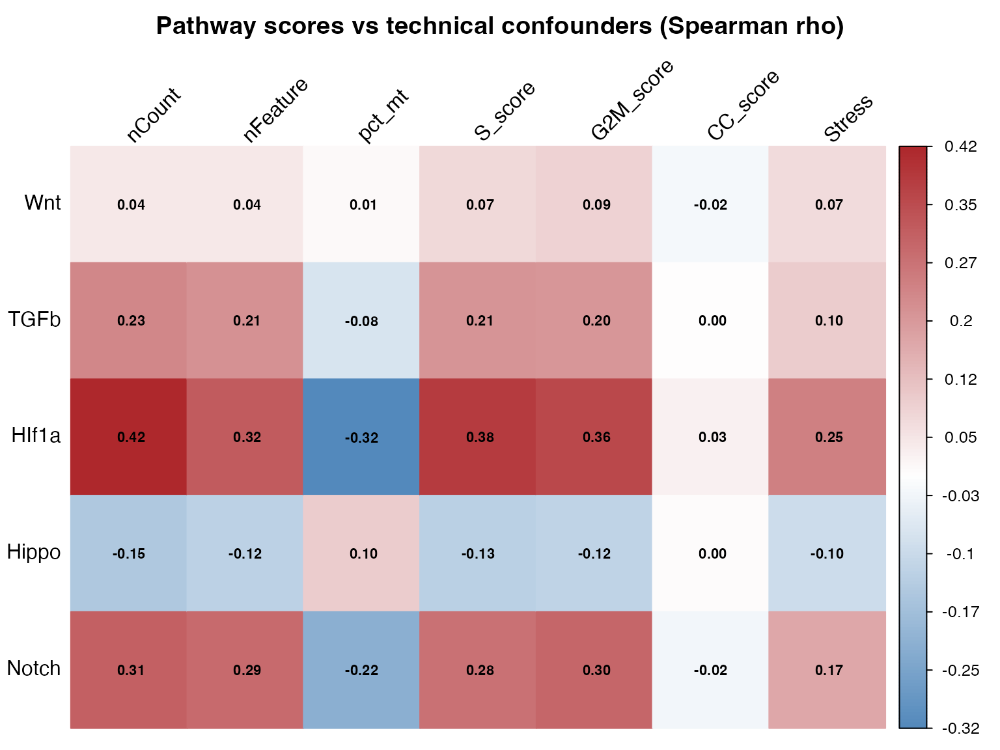